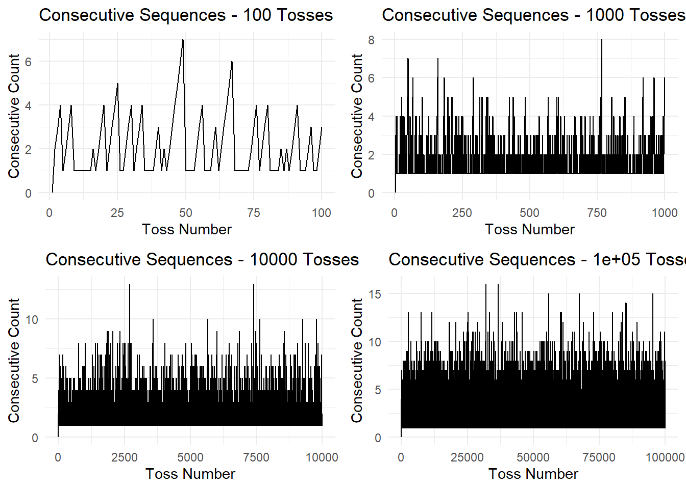

# Function to simulate coin tosses
simulate_tosses <- function(n) {
set.seed(42) # Set seed for reproducibility
flips <- sample(c("Heads", "Tails"), n, replace = TRUE)
return(flips)
}
# Simulate coin flips for different scenarios
flips_100 <- simulate_tosses(100)
flips_1000 <- simulate_tosses(1000)
flips_10000 <- simulate_tosses(10000)
flips_100000 <- simulate_tosses(100000)Dive into the world of coin flip sequences using R simulations. Objective: Understand the probabilities of consecutive sequences of heads or tails. Simulating Coin Flips
Utilize R to simulate coin flips with varying numbers (100, 1000, 10000, 100000) for experimentation. simulate_tosses function generates sequences of “Heads” and “Tails.” Analyzing Consecutive Sequences
Define count_consecutive_sequences function to analyze lengths of consecutive sequences. Obtain counts for different scenarios: 100 tosses, 1000 tosses, 10000 tosses, and 100000 tosses. Visualizing the Results
Use ggplot2 to create line plots (create_plot function) illustrating consecutive sequence counts. Arrange plots with gridExtra to compare scenarios side by side. Results and Insights
Longer consecutive sequences are more likely with a larger number of tosses. Simulation provides valuable insights into the probability distribution of sequences. Conclusion
Probability exploration through simulation is a powerful tool. Whether a statistician, data scientist, or curious individual, simulations offer insights into chance. Encouragement to experiment with parameters and observe changes in results.
In this blog post, we will dive into the fascinating world of coin flip sequences. Leveraging the capabilities of R, we will conduct simulations to gain insights into the probabilities of consecutive sequences of heads or tails.
Let’s kick things off by simulating coin flips using R. We’ll conduct experiments with varying numbers of flips to observe how the results evolve.
Moving on, we’ll analyze the consecutive sequences of heads or tails in each simulation. We’ll count the length of these sequences to gain insights into their distribution.
# Function to count consecutive sequences
count_consecutive_sequences <- function(flips) {
count <- rep(0, length(flips))
counter <- 1
for (i in 2:length(flips)) {
if (flips[i] == flips[i-1]) {
counter <- counter + 1
} else {
counter <- 1
}
count[i] <- counter
}
return(count)
}
# Function to create a plot for consecutive sequences
create_plot <- function(consecutive_counts, n) {
data <- data.frame(Launch = 1:length(consecutive_counts), Consecutive = consecutive_counts)
library(ggplot2)
plot <- ggplot(data, aes(x = Launch, y = Consecutive)) +
geom_line() +
labs(title = paste("Consecutive Sequences -", n, "Tosses"),
x = "Toss Number",
y = "Consecutive Count") +
theme_minimal()
return(plot)
}
# Analyze consecutive sequences for different scenarios
consecutive_counts_100 <- count_consecutive_sequences(flips_100)
consecutive_counts_1000 <- count_consecutive_sequences(flips_1000)
consecutive_counts_10000 <- count_consecutive_sequences(flips_10000)
consecutive_counts_100000 <- count_consecutive_sequences(flips_100000)Now, let’s create visualizations to better understand the distribution of consecutive sequences. We’ll use the ggplot2 library to craft insightful graphs and gridExtra to arrange them together.
# Create plots
plot_100 <- create_plot(consecutive_counts_100, 100)
plot_1000 <- create_plot(consecutive_counts_1000, 1000)
plot_10000 <- create_plot(consecutive_counts_10000, 10000)
plot_100000 <- create_plot(consecutive_counts_100000, 100000)
# Use gridExtra to arrange the plots
library(gridExtra)
grid.arrange(plot_100, plot_1000, plot_10000, plot_100000, ncol = 2)
# Function to simulate coin tosses and plot the maximum consecutive sequence
simulate_and_plot_max_sequence <- function(n) {
# Simulate coin tosses
flips <- simulate_tosses(n)
# Analyze consecutive sequences
consecutive_counts <- count_consecutive_sequences(flips)
# Return the maximum consecutive sequence
return(max(consecutive_counts))
}
# Vector to store results
max_sequences <- c()
# Perform simulations with increasing numbers of tosses
for (n_tosses in c(100, 2000, 10000, 100000)) {
max_sequence <- simulate_and_plot_max_sequence(n_tosses)
max_sequences <- c(max_sequences, max_sequence)
}
# Plot the results
library(ggplot2)
data <- data.frame(Num_Tosses = c(100, 2000, 10000, 100000), Max_Sequence = max_sequences)
plot <- ggplot(data, aes(x = Num_Tosses, y = Max_Sequence)) +
geom_line() +
labs(title = "Maximum Consecutive Sequence vs. Number of Tosses",
x = "Number of Tosses",
y = "Max Consecutive Sequence") +
theme_minimal()
print(plot)
After simulating coin flips and analyzing consecutive sequences, we’ve gained valuable insights into the probability of encountering various sequences. As expected, with a larger number of flips, the likelihood of encountering longer consecutive sequences increases.
Conclusion Exploring probability through simulation is a powerful way to grasp the nuances of random processes. Whether you’re a statistician, data scientist, or simply curious, these simulations provide a fascinating glimpse into the world of chance.
Feel free to experiment with different parameters, such as the number of flips or the probability of getting heads or tails, and observe how the results change. Happy exploring!